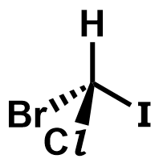
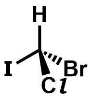

| (R)-bromochloroiodomethane | (S)-bromochloroiodomethane |
|---|---|
|  |  |
| Try to rotate the two molecules about the z-axis (by sliding your finger left-right). You find that the two mirror images are non-superposable. You can only align two of the substituents at any time. The remaining two substituents will not be aligned. These two molecules are said to be a pair of enantiomers, and the compound exhibit enantiomerism. | |